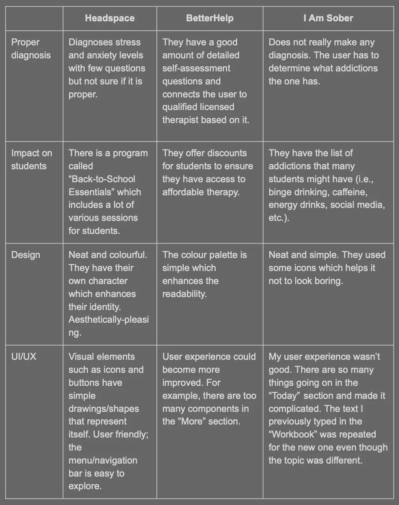
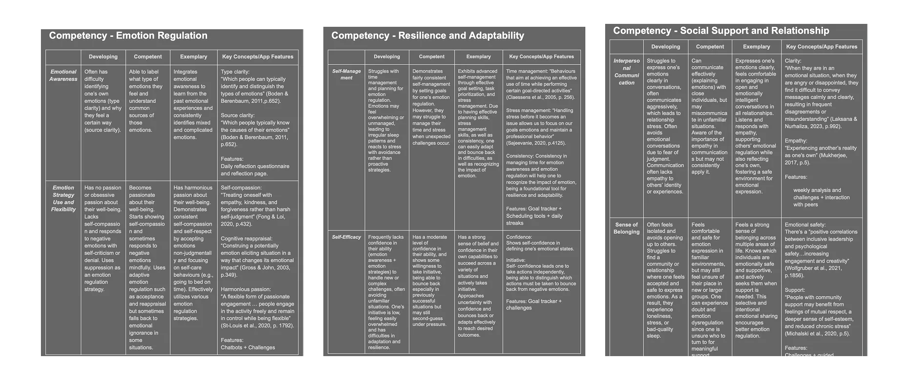
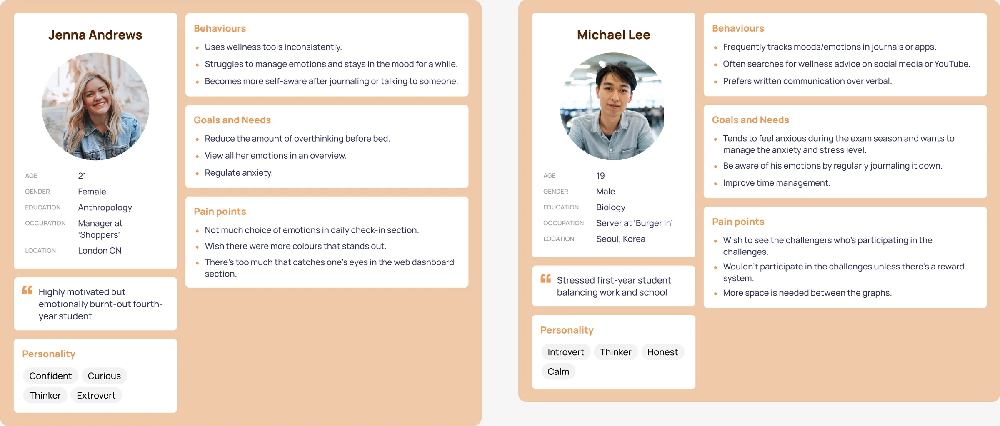
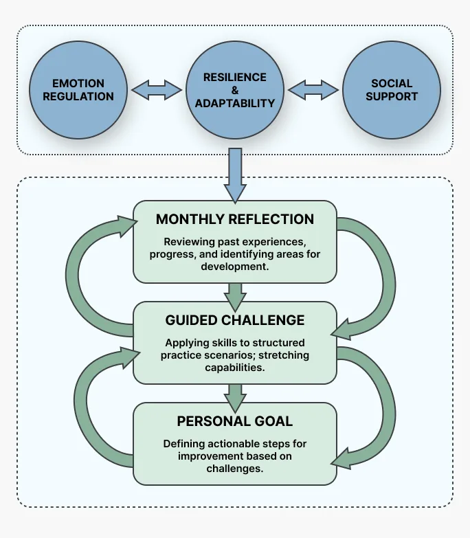

Student Well‑being App
A student well-being app that goes beyond logging feelings. A short self-assessment finds which of three research-backed competencies a student is weakest in, then a structured path helps them build it. During my internship I owned the research, journey maps and design, with senior UX designers reviewing each round.
- Role
- UX researcher & designer (intern)
- Owned
- Research, journey maps, UX and Figma design
- Timeline
- 17 weeks, summer 2025
- Team
- Senior UX designers (review), education faculty, senior developers
- Methods
- Literature review, surveys, journey mapping, think-aloud testing
- Status
- Design complete, development ongoing

Problem
Well-being apps help students reflect, but never name the skill they need to build.
Existing apps already help students look back on how they felt, and many suggest actions that might help. What none of them do is tell a student which specific skill they're lacking, so the advice stays general and nothing builds over time.
Rating my mood feels pointless when nothing changes after.
Pre-survey, studentThe app I'm using is suggesting me tasks to do but I am unsure if that will actually help.
Pre-survey, studentBy the time I realize something's wrong, it's been going on for weeks.
Pre-survey, student
A competitive scan of Headspace, BetterHelp and I Am Sober showed the same gap.
- What apps doHelp students reflect on their feelings and suggest actions that could help them feel better.
- What's missingNone name the competencies behind well-being, or identify which one a student is weakest in and could improve.
- Our approachFocus on the core competencies the literature links to student well-being, assess each one to find the weakest, then build it through targeted goals, challenges and reflection.

First pivot
We started with sleep tracking. The research talked us out of it.
Sleep felt like the obvious, safe lever for student well-being, and we got as far as a full sitemap. But the literature review kept pulling us away: sleep only explained part of the picture. Emotion regulation, resilience and social-emotional skills mattered just as much.
Sleep tracking was common and we wanted to approach the problem differently.
Insight
Students don't need another journal. They need guided practice in three skills.
The literature review pointed to three competencies as the real drivers of student well-being. Logging a feeling builds none of them but a guided practice does.
- Emotion regulationNoticing and managing your emotions before they build up.
- Resilience & adaptabilityRecovering from setbacks and adjusting to change.
- Social-emotional regulationHandling relationships and asking for support.
Before designing any screens, I mapped how each competency would be measured and what progress looks like at each level, based on the literature.

Who it's for
Students who already notice they're struggling, but don't know what to do next.

The experience
One self-assessment, one weakest competency, one clear path.
Students start with a short self-assessment across the three competencies, which surfaces the one they're weakest in. From there, a loop of personal goals, guided challenges and monthly reflection tracks progress. Instead of free-form logging, the app gives them a starting point and a reason to come back.

Low-fidelity first
Testing
We measured whether students thought differently about their emotions, not just whether they finished tasks.
The testing session combined a pre-survey, a think-aloud walkthrough and a post-survey, then we grouped what we heard into what confused people, what worked and what to change.
Second pivot
Testing showed we had added too much. We cut back to the core.
The comment that stopped the team
"This feels like it's lost its purpose. I don't even understand what the app is about."
Our first full prototype had multiple tracking views, detailed progress analytics and several features running in parallel. We re-read the literature review against our original goal. Most of what we'd added didn't serve it, so we cut it.
- OnboardingRedesigned after students expected a traditional mood tracker.
- Charts and analyticsReduced, so students focus on reflecting instead of reading data.
- Social goal-sharingStrengthened, after participants described it as motivating.
- Reflection promptsExpanded, after testing suggested they improved emotional clarity.
Visual system
A style guide kept 100+ screens consistent, and calmer than the first draft.
A style guide from the senior designer's colour palette and icon set, so every screen followed the same rules for colour, type and icons. We also moved from the navy low-fidelity look to warmer, calmer colours that suit the subject.
Status
Research and design are done; the backend and a chatbot are being built.
- DoneResearch, design and a round of testing.
- In progressBackend and chatbot development.
- SharedPresented at a research-focused virtual conference.
Reflection
From how people use an interface to why they behave the way they do.
This project changed how I think about UX research. Rather than only asking how users interact with an interface, I got more interested in why they behave the way they do in the first place. That still shapes how I approach product design today.